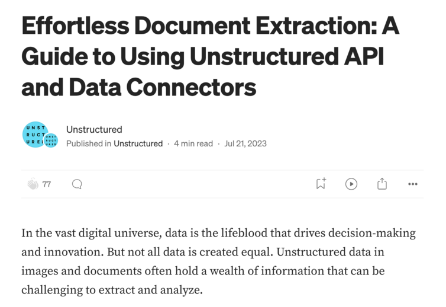
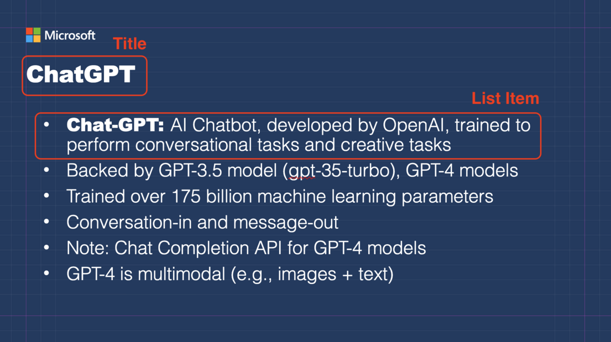
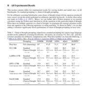
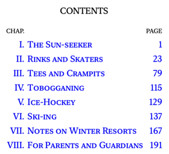
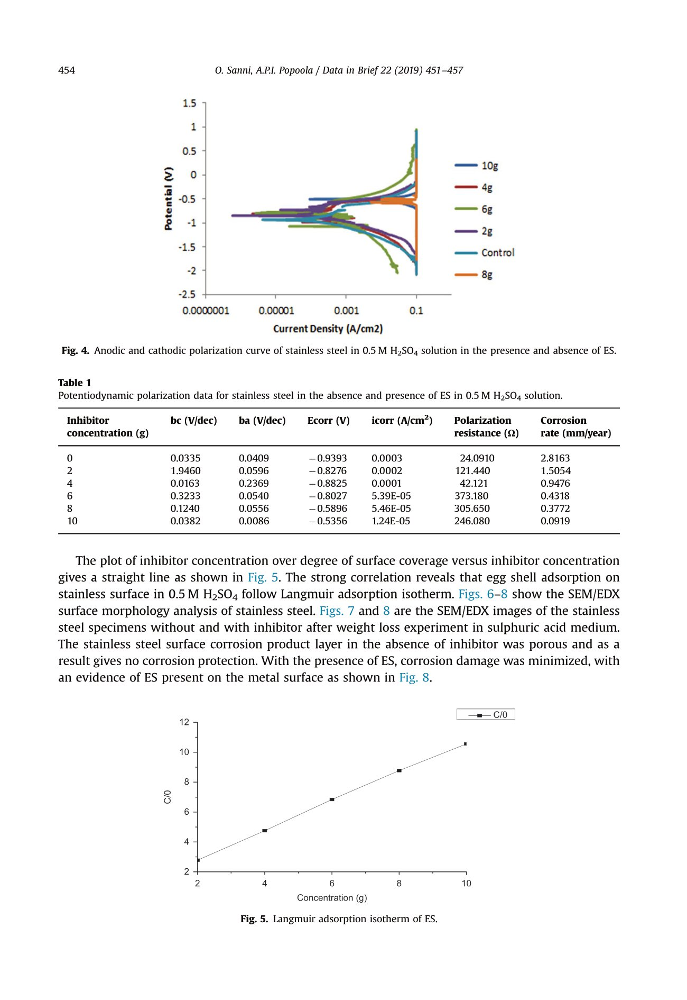
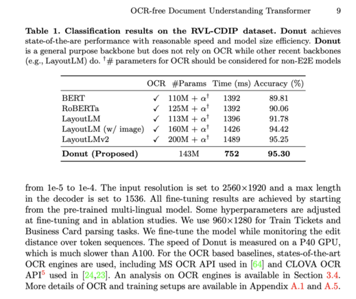
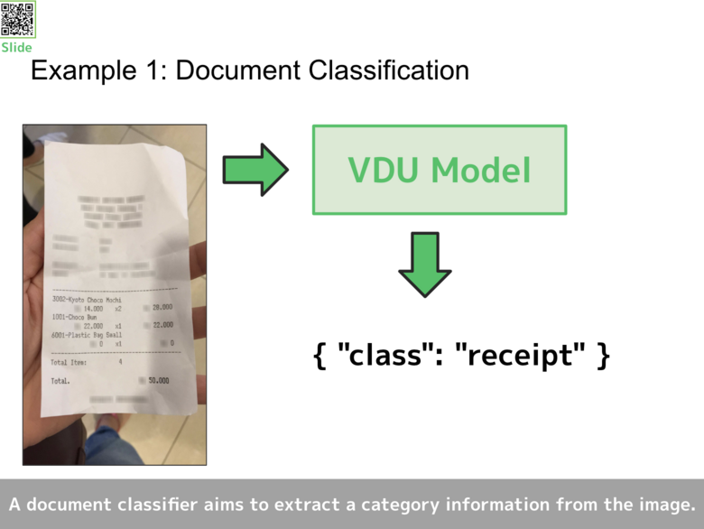
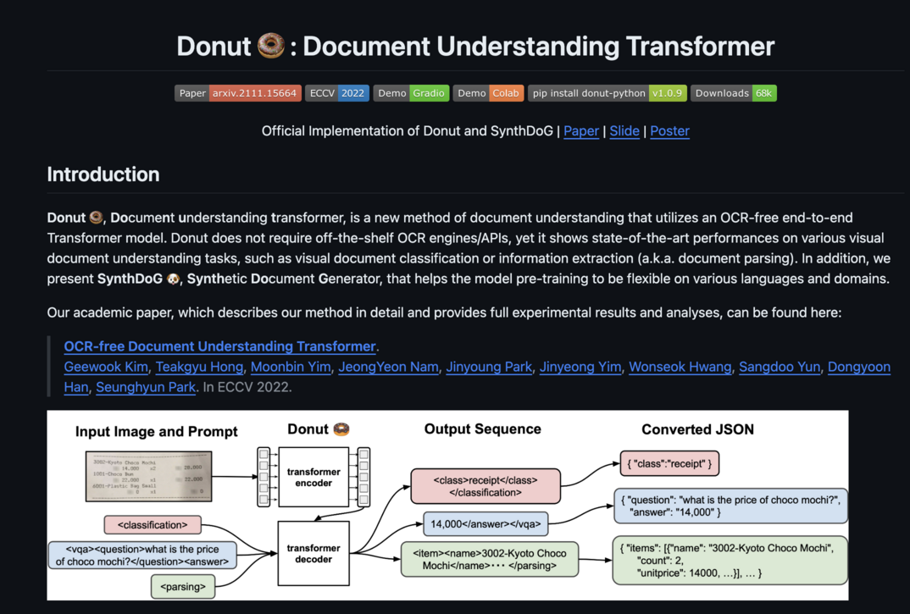

flowchart LR
H[HTML];
P[PDF];
S[PPTX];
U([Unstructured API]);
H --> U;
S --> U;
P --> U;
U --> JSON;
Preprocessing Unstructured Data for LLM Applications
Overview
- RAG: retrieve context from database and inject this to the prompt for an LLM
- Processing documents:
- content
- elements: title, narritive, table, image
- metadata: page number, file type, file name
Normalising Content
We want to convert raw documents to a common format, so LLMs treat everything in the same way.
We will then perform data serialisation to stored the pre–processed content. (In this course we will use json.)
Connect to Unstructured API Service
We use the unstructured service.
from IPython.display import JSON
from IPython.display import Image
import warnings; warnings.filterwarnings('ignore') # noqa
import json
from pprint import pprint
from unstructured_client import UnstructuredClient
from unstructured_client.models import shared
from unstructured_client.models.errors import SDKError
from unstructured.partition.html import partition_html
from unstructured.partition.pptx import partition_pptx
from unstructured.staging.base import dict_to_elements, elements_to_jsonfrom Utils import Utils
utils = Utils()
# It's a free API key
DLAI_API_KEY = "kOdgkX4kz8DwG0NlhcxkxPoiXznU6K"
DLAI_API_URL = "https://api.unstructured.io/general/v0/general"
s = UnstructuredClient(
api_key_auth=DLAI_API_KEY,
server_url=DLAI_API_URL,
)Process HTML files
Image(filename="images/HTML_demo.png", width=400)
filename = "example_files/medium_blog.html"
elements = partition_html(filename=filename)
element_dict = [el.to_dict() for el in elements]
example_output = json.dumps(element_dict[11:15], indent=2)
pprint(element_dict[0]){'element_id': '58ce54f95c4ba051d7ba46498beed83d',
'metadata': {'category_depth': 0,
'file_directory': 'example_files',
'filename': 'medium_blog.html',
'filetype': 'text/html',
'languages': ['eng'],
'last_modified': '2024-08-28T09:58:39',
'link_texts': ['Open in app'],
'link_urls': ['https://rsci.app.link/?%24canonical_url=https%3A%2F%2Fmedium.com%2Fp%2F6c2659eda4af&%7Efeature=LoOpenInAppButton&%7Echannel=ShowPostUnderCollection&source=---two_column_layout_nav----------------------------------']},
'text': 'Open in app',
'type': 'Title'}JSON(example_output)<IPython.core.display.JSON object>Parsing Power Points
Image(filename="images/pptx_slide.png", width=400) 
filename = "example_files/msft_openai.pptx"
elements = partition_pptx(filename=filename)
element_dict = [el.to_dict() for el in elements]
JSON(json.dumps(element_dict[:], indent=2))<IPython.core.display.JSON object>Parsing PDF files
Image(filename="images/cot_paper.png", width=400) 
filename = "example_files/CoT.pdf"
with open(filename, "rb") as f:
files=shared.Files(
content=f.read(),
file_name=filename,
)
req = shared.PartitionParameters(
files=files,
strategy='hi_res',
pdf_infer_table_structure=True,
languages=["eng"],
)
try:
resp = s.general.partition(req)
except SDKError as e:
print(e)INFO: Preparing to split document for partition.
INFO: Starting page number set to 1
INFO: Allow failed set to 0
INFO: Concurrency level set to 5
INFO: Splitting pages 1 to 1 (1 total)
INFO: Determined optimal split size of 2 pages.
INFO: Document has too few pages (1) to be split efficiently. Partitioning without split.
INFO: Successfully partitioned the document.JSON(json.dumps(resp.elements, indent=2))<IPython.core.display.JSON object>Metadata Extraction
Introduction
Metadata includes
- Document details: additional information to enrich the content.
- Source identification: filename, url, filetype
- Structural information: hierarchy indicator (section, …)
- Search enhancements: tags that can be used for filtering …
Hybrid Search
Pure semantic search (with embeddings) may not work because of
- too many matches
- user prefer new information
- important information are indeed in the metadata
We use “hybrid search” instead, applying techniques such as filtering and keyword search.
Parsing EPUB file
Image(filename='images/winter-sports-cover.png', width=200)Image(filename="images/winter-sports-toc.png", width=200) 
filename = "example_files/winter-sports.epub"
with open(filename, "rb") as f:
files=shared.Files(
content=f.read(),
file_name=filename,
)
req = shared.PartitionParameters(files=files, content_type='epub')try:
resp = s.general.partition(req)
except SDKError as e:
print(e)INFO: Preparing to split document for partition.
INFO: Given file doesn't have '.pdf' extension, so splitting is not enabled.
INFO: Partitioning without split.
INFO: Successfully partitioned the document.JSON(json.dumps(resp.elements[0:3], indent=2))<IPython.core.display.JSON object>len(resp.elements), type(resp.elements[0])(716, dict)Find elements from chapters
Let’s inspect the metadata. Notice the parent_id item. This gives use the hierarchy of the document.
[
x for x in resp.elements
if x['type'] == 'Title' and 'hockey' in x['text'].lower()
][{'type': 'Title',
'element_id': '67d58ab3aae6e41e9ce429dc4cbe5501',
'text': 'CHAPTER V ICE-HOCKEY',
'metadata': {'category_depth': 1,
'languages': ['eng'],
'parent_id': '75148e24f73a367d53cd1b681d9f1979',
'filename': 'winter-sports.epub',
'filetype': 'application/epub'}},
{'type': 'Title',
'element_id': '74abeada61b4e83d7be4cde9015706d4',
'text': 'ICE HOCKEY',
'metadata': {'category_depth': 0,
'languages': ['eng'],
'filename': 'winter-sports.epub',
'filetype': 'application/epub'}}]Let’s find the items for each chapter titles.
If we know these “root nodes” we can find their children by transversing the tree!
chapters = [
"THE SUN-SEEKER",
"RINKS AND SKATERS",
"TEES AND CRAMPITS",
"ICE-HOCKEY",
"SKI-ING",
"NOTES ON WINTER RESORTS",
"FOR PARENTS AND GUARDIANS",
]chapter_ids = {}
for element in resp.elements:
for chapter in chapters:
e_text = element["text"]
e_type = element["type"]
if (chapter in e_text) and e_type == "Title":
chapter_ids[element["element_id"]] = chapter
breakchapter_ids{'65af5da00154a2f526b43177bbad3189': 'THE SUN-SEEKER',
'4e3f02ce1525ca1a197b5d5e9cd1953d': 'RINKS AND SKATERS',
'c2f9b5a30cb07d9adaf5f390dc8e7564': 'TEES AND CRAMPITS',
'67d58ab3aae6e41e9ce429dc4cbe5501': 'ICE-HOCKEY',
'ea7faf4689009a3b72bf19dc10f29037': 'SKI-ING',
'ea3feb77c48592d21a05386e68fde88e': 'NOTES ON WINTER RESORTS',
'56c4ba79d33a505bb9b4480d7a5a4ce7': 'FOR PARENTS AND GUARDIANS'}Now we find the childern IDs for each chapters
chapter_to_id = {v: k for k, v in chapter_ids.items()}
pprint(
[
x for x in resp.elements
if x["metadata"].get("parent_id") == chapter_to_id["ICE-HOCKEY"]
][0]
){'element_id': '24a39efc765a60db62dd23405133a957',
'metadata': {'filename': 'winter-sports.epub',
'filetype': 'application/epub',
'languages': ['eng'],
'parent_id': '67d58ab3aae6e41e9ce429dc4cbe5501'},
'text': 'Many of the Swiss winter-resorts can put into the field a very '
'strong ice-hockey team, and fine teams from other countries often '
'make winter tours there; but the ice-hockey which the ordinary '
'winter visitor will be apt to join in will probably be of the most '
'elementary and unscientific kind indulged in, when the skating day '
'is drawing to a close, by picked-up sides. As will be readily '
'understood, the ice over which a hockey match has been played is '
'perfectly useless for skaters any more that day until it has been '
'swept, scraped, and sprinkled or flooded; and in consequence, at all '
'Swiss resorts, with the exception of St. Moritz, where there is a '
'rink that has been made for the hockey-player, or when an important '
'match is being played, this sport is supplementary to such others as '
'I have spoken of. Nobody, that is, plays hockey and nothing else, '
'since he cannot play hockey at all till the greedy skaters have '
'finished with the ice.',
'type': 'NarrativeText'}Load documents into a vector db
In this section we will use chromadb as the vectore database.
import chromadbclient = chromadb.PersistentClient(
path="chroma_tmp",
settings=chromadb.Settings(allow_reset=True),
)
client.reset()INFO: Anonymized telemetry enabled. See https://docs.trychroma.com/telemetry for more information.Truecollection = client.create_collection(
name="winter_sports",
metadata={"hnsw:space": "cosine"}
)We index these text chunks with MiniLM-L6-v2 model. (Providaded by whom?)
for element in resp.elements:
parent_id = element["metadata"].get("parent_id")
chapter = chapter_ids.get(parent_id, "")
collection.add(
documents=[element["text"]],
ids=[element["element_id"]],
metadatas=[{"chapter": chapter}]
)Query the database
We can use the peek method to check out items in the database.
results = collection.peek(limit=3)
pprint(results["documents"])['• You provide a full refund of any money paid by a user who notifies you in '
'writing (or by e-mail) within 30 days of receipt that s/he does not agree to '
'the terms of the full Project Gutenberg™ License. You must require such a '
'user to return or destroy all copies of the works possessed in a physical '
'medium and discontinue all use of and all access to other copies of Project '
'Gutenberg™ works.',
'[Image unavailable.]',
'Each call must be skated at least twice, beginning once with the right foot '
'and once with the left.']We can use query method to perform semantic search.
We can use where parameter to filter out unwanted items.
result = collection.query(
query_texts=["How many players are on a team?"],
n_results=2,
where={"chapter": "ICE-HOCKEY"},
)
pprint(result){'data': None,
'distances': [[0.5229756832122803, 0.7836341261863708]],
'documents': [['It is a wonderful and delightful sight to watch the speed and '
'accuracy of a first-rate team, each member of which knows the '
'play of the other five players. The finer the team, as is '
'always the case, the greater is their interdependence on each '
'other, and the less there is of individual play. Brilliant '
'running and dribbling, indeed, you will see; but as '
'distinguished from a side composed of individuals, however '
'good, who are yet not a team, these brilliant episodes are '
'always part of a plan, and end not in some wild shot but in a '
'pass or a succession of passes, designed to lead to a good '
'opening for scoring. There is, indeed, no game at which team '
'play outwits individual brilliance so completely.',
'And in most places hockey is not taken very seriously: it is '
'a charming and heat-producing scramble to take part in when '
'the out-door day is drawing to a close and the chill of the '
'evening beginning to set in; there is a vast quantity of '
'falling down in its componence and not very many goals, and a '
'general ignorance about rules. But since a game, especially '
'such a wholly admirable and delightful game as ice-hockey, '
'may just as well be played on the lines laid down for its '
'conduct as not, I append at the end of this short section a '
'copy of the latest edition of the rules as issued by Prince’s '
'Club, London.']],
'embeddings': None,
'ids': [['25e6c2912acbc885f6d450e94497e432',
'2ba6b9d84d77ce436f247537bd1546ef']],
'included': ['metadatas', 'documents', 'distances'],
'metadatas': [[{'chapter': 'ICE-HOCKEY'}, {'chapter': 'ICE-HOCKEY'}]],
'uris': None}Chunking the Content
Introduction
- Chunking Necessity: Vector databases need documents split into chunks for retrieval and prompt generation.
- Query Result Variability: The same query will return different content depending on how the document is chunked.
- Even Size Chunks: The easiest way is to split the document into roughly even size chunks. This can result in similar content getting split across chunks.
Chunking by Atomic Elements
By identifying atomic elements, you can chunk by combining elements rather than splitting raw text.
- Results in more coherent chunks
- Example: combining content under the same section header into the same chunk.
We can use the chunk_by_title function to achieve this.
How is this done?
- partitioning documents into atomic elements
- combine elements until a breaking condition is satisfied.
What are the break conditions?
- elements are having a new title/section
- element similarity value exceeds a threshold
- element metadata (page) having a new value.
We need to experiment a bit to find the good stragety. Here is an example.
from unstructured.chunking.basic import chunk_elements
from unstructured.chunking.title import chunk_by_title
from unstructured.staging.base import dict_to_elements
elements = dict_to_elements(resp.elements)
print(f"There are {len(elements)} elements ({type(elements[0])})")There are 716 elements (<class 'unstructured.documents.elements.Title'>)Now we apply the chunk_by_title function where the break condition is:
Splits off into a new CompositeElement when a title is detected or if metadata changes, which happens when page numbers or sections change. Cuts off sections once they have exceeded a character length of max_characters.
chunks = chunk_by_title(
elements,
combine_text_under_n_chars=100,
max_characters=3000, # maximum number for a chunk
)
print(f"There are {len(chunks)} chunks after `chunk_by_title`")There are 248 chunks after `chunk_by_title`print(chunks[1])Title: Winter Sports in Switzerland
Author: E. F. Benson
Illustrator: C. Fleming Williams
Photographer: Mrs. Aubrey Le Blond
Release date: August 23, 2019 [EBook #60153] Most recently updated: January 30, 2020Preprocessing PDFs and Images
Sometimes we need visual information to process the documents. Here we will use two techniques
- Document layout detection (DLD)
- Vision transformers (ViT):
DLD
To use object detection model to draw bounding boxes.
- vision detection: identify and classify bounding boxes
- (optional) text extraction: to perform OCR within bounding boxes
We often use the Yolo model.
ViT
Takes image as input and generate texts directly.
- the image is passed to the transformer encoder, and the decoder generates the output.
- OCR is not needed
- We can train the model to output a valid JSON string.
We often use the document understanding transformer (DONUT) architecture. (arxiv paper)
Example
from IPython.display import Image
Image(filename="images/el_nino.png", width=400) 
Parsing HTML (Pure Text)
filename = "example_files/el_nino.html"
html_elements = partition_html(filename=filename)
for element in html_elements[:10]:
print(f"{element.category.upper()}: {element.text}")
print("-" * 5)UNCATEGORIZEDTEXT: CNN 1/30/2024
-----
TITLE: A potent pair of atmospheric rivers will drench California as El Niño makes its first mark on winter
-----
TITLE: By Mary Gilbert, CNN Meteorologist
-----
TITLE: Updated: 3:49 PM EST, Tue January 30, 2024
-----
TITLE: Source: CNN
-----
NARRATIVETEXT: A potent pair of atmospheric river-fueled storms are about to unleash a windy and incredibly wet week in California in what is the first clear sign of the influence El Niño was expected to have on the state this winter.
-----
NARRATIVETEXT: The soaking storms will raise the flood threat across much of California into next week, but it appears the wet pattern is likely to continue well into February as a more typical El Niño pattern kicks into gear.
-----
NARRATIVETEXT: El Niño – a natural phenomenon in the tropical Pacific that influences weather around the globe – causes changes in the jet stream that can point storms directly at California. Storms can also tap into an extra-potent supply of moisture from the tropics called an atmospheric river.
-----
NARRATIVETEXT: El Niño hasn’t materialized many atmospheric rivers for California so far this winter, with most hitting the Pacific Northwest.
-----
NARRATIVETEXT: But all that is set to change this week.
-----Parsing PDF (Direct)
The fast stragety from unstructured can parse the PDF file by working on the text directly.
from unstructured.partition.pdf import partition_pdf
filename = "example_files/el_nino.pdf"
pdf_elements = partition_pdf(filename=filename, strategy="fast")
for element in html_elements[:10]:
print(f"{element.category.upper()}: {element.text}")INFO: pikepdf C++ to Python logger bridge initializedUNCATEGORIZEDTEXT: CNN 1/30/2024
TITLE: A potent pair of atmospheric rivers will drench California as El Niño makes its first mark on winter
TITLE: By Mary Gilbert, CNN Meteorologist
TITLE: Updated: 3:49 PM EST, Tue January 30, 2024
TITLE: Source: CNN
NARRATIVETEXT: A potent pair of atmospheric river-fueled storms are about to unleash a windy and incredibly wet week in California in what is the first clear sign of the influence El Niño was expected to have on the state this winter.
NARRATIVETEXT: The soaking storms will raise the flood threat across much of California into next week, but it appears the wet pattern is likely to continue well into February as a more typical El Niño pattern kicks into gear.
NARRATIVETEXT: El Niño – a natural phenomenon in the tropical Pacific that influences weather around the globe – causes changes in the jet stream that can point storms directly at California. Storms can also tap into an extra-potent supply of moisture from the tropics called an atmospheric river.
NARRATIVETEXT: El Niño hasn’t materialized many atmospheric rivers for California so far this winter, with most hitting the Pacific Northwest.
NARRATIVETEXT: But all that is set to change this week.Parsing PDF (DLD)
If we use DLD we see a great improvement over direct method. For instance, the header are separated from the title.
with open(filename, "rb") as f:
files=shared.Files(
content=f.read(),
file_name=filename,
)
req = shared.PartitionParameters(
files=files,
strategy="hi_res",
hi_res_model_name="yolox",
)
try:
resp = s.general.partition(req)
dld_elements = dict_to_elements(resp.elements)
except SDKError as e:
print(e)INFO: Preparing to split document for partition.
INFO: Starting page number set to 1
INFO: Allow failed set to 0
INFO: Concurrency level set to 5
INFO: Splitting pages 1 to 2 (2 total)
INFO: Determined optimal split size of 2 pages.
INFO: Document has too few pages (2) to be split efficiently. Partitioning without split.
INFO: Successfully partitioned the document.for element in dld_elements[:10]:
print(f"{element.category.upper()}: {element.text}")HEADER: 1/30/24, 5:11 PM
HEADER: CNN 1/30/2024
HEADER: Pineapple express: California to get drenched by back-to-back storms fueling a serious flood threat | CNN
TITLE: A potent pair of atmospheric rivers will drench California as El Niño makes its first mark on winter
NARRATIVETEXT: By Mary Gilbert, CNN Meteorologist
NARRATIVETEXT: Updated: 3:49 PM EST, Tue January 30, 2024
NARRATIVETEXT: Source: CNN
NARRATIVETEXT: A potent pair of atmospheric river-fueled storms are about to unleash a windy and incredibly wet week in California in what is the first clear sign of the influence El Niño was expected to have on the state this winter.
NARRATIVETEXT: The soaking storms will raise the flood threat across much of California into next week, but it appears the wet pattern is likely to continue well into February as a more typical El Niño pattern kicks into gear.
NARRATIVETEXT: El Niño – a natural phenomenon in the tropical Pacific that influences weather around the globe – causes changes in the jet stream that can point storms directly at California. Storms can also tap into an extra-potent supply of moisture from the tropics called an atmospheric river.If we inspect the different categories, the PDF parser does a better job than the HTML!
import collections
html_categories = [el.category for el in html_elements]
collections.Counter(html_categories).most_common()[('NarrativeText', 23), ('Title', 7), ('UncategorizedText', 1)]dld_categories = [el.category for el in dld_elements]
collections.Counter(dld_categories).most_common()[('NarrativeText', 28), ('Header', 6), ('Title', 4), ('Footer', 1)]Extracting Tables
We can use table transformer to process tabular data, getting JSON response.
- identify table location with a document layout model (bounding boxes)
- run the table through the table transfoermer
We can also just use ViT to extract table content. Typically we get HTML source code back.
Finally we can also use rules–based OCR to process the table.
Example
Image(filename="images/embedded-images-tables.jpg", width=400) 
filename = "example_files/embedded-images-tables.pdf"
with open(filename, "rb") as f:
files=shared.Files(
content=f.read(),
file_name=filename,
)
req = shared.PartitionParameters(
files=files,
strategy="hi_res",
hi_res_model_name="yolox",
skip_infer_table_types=[],
pdf_infer_table_structure=True, # This is important for tables
)
try:
resp = s.general.partition(req)
elements = dict_to_elements(resp.elements)
except SDKError as e:
print(e)INFO: Preparing to split document for partition.
INFO: Starting page number set to 1
INFO: Allow failed set to 0
INFO: Concurrency level set to 5
INFO: Splitting pages 1 to 1 (1 total)
INFO: Determined optimal split size of 2 pages.
INFO: Document has too few pages (1) to be split efficiently. Partitioning without split.
INFO: Successfully partitioned the document.tables = [el for el in elements if el.category == "Table"]tables[0].text'Inhibitor Polarization Corrosion be (V/dec) ba (V/dec) Ecorr (V) icorr (AJcm?) concentration (g) resistance (Q) rate (mmj/year) 0.0335 0.0409 —0.9393 0.0003 24.0910 2.8163 1.9460 0.0596 .8276 0.0002 121.440 1.5054 0.0163 0.2369 .8825 0.0001 42121 0.9476 s NO 03233 0.0540 —0.8027 5.39E-05 373.180 0.4318 0.1240 0.0556 .5896 5.46E-05 305.650 0.3772 = 5 0.0382 0.0086 .5356 1.24E-05 246.080 0.0919'from IPython.core.display import HTML
table_html = tables[0].metadata.text_as_html
HTML(table_html)| Inhibitor concentration (g) | be (V/dec) | ba (V/dec) | Ecorr (V) | icorr (AJcm?) | Polarization resistance (Q) | Corrosion rate (mmj/year) |
|---|---|---|---|---|---|---|
| 0.0335 | 0.0409 | —0.9393 | 0.0003 | 24.0910 | 2.8163 | |
| NO | 1.9460 | 0.0596 | —0.8276 | 0.0002 | 121.440 | 1.5054 |
| 0.0163 | 0.2369 | —0.8825 | 0.0001 | 42121 | 0.9476 | |
| s | 03233 | 0.0540 | —0.8027 | 5.39E-05 | 373.180 | 0.4318 |
| 0.1240 | 0.0556 | —0.5896 | 5.46E-05 | 305.650 | 0.3772 | |
| = 5 | 0.0382 | 0.0086 | —0.5356 | 1.24E-05 | 246.080 | 0.0919 |
Table Summarisation
Finally, we can use langchain to summarize the table. Here we use a local LLM served by Ollama instead of OpenAI.
from langchain_community.llms import Ollama
from langchain_core.documents import Document
from langchain.chains.summarize import load_summarize_chainLLM_MODEL = "gemma2"
llm = Ollama(model=LLM_MODEL)chain = load_summarize_chain(llm, chain_type="stuff")
result = chain.invoke([Document(page_content=table_html)])print(result['output_text'].strip())The table presents electrochemical data for a material under different inhibitor concentrations.
**Key Data Points:**
* **be, ba:** Parameters related to the polarization resistance.
* **Ecorr:** Corrosion potential (more negative values indicate higher corrosion susceptibility).
* **icorr:** Corrosion current density (lower values indicate lower corrosion rates).
* **Q:** Polarization resistance (higher values indicate greater resistance to corrosion).
* **Corrosion rate:** Measured in millimeters per year, indicating the material's degradation speed.
**Observations:**
* Increasing inhibitor concentration generally leads to more positive Ecorr values, lower icorr values, and higher Q values, suggesting reduced corrosion rates.
The specific effects of different inhibitors (indicated by labels like "NO," "s", "=5") vary.Building RAG Bot
Overview
flowchart LR;
h[*.html];
s[*.pptx];
p[*.pdf];
q([user query]);
x[prompt];
llm{{LLM}};
vdb[(Vector\nDatabase)]
h --> vdb;
s --> vdb;
p --> vdb;
q --> vdb --> x;
q --> x --> llm;
Example
Our documents including a paper (PDF), a slid (PPTX) and a mardown file (README.md).
Image(filename='images/donut_paper.png', width=200)
Image(filename='images/donut_slide.png', width=200) 
Image(filename='images/donut_readme.png', width=200) 
Process PDF
filename = "example_files/donut_paper.pdf"
with open(filename, "rb") as f:
files=shared.Files(
content=f.read(),
file_name=filename,
)
req = shared.PartitionParameters(
files=files,
strategy="fast",
pdf_infer_table_structure=True,
skip_infer_table_types=[],
)
try:
resp = s.general.partition(req)
pdf_elements = dict_to_elements(resp.elements)
except:
...INFO: Preparing to split document for partition.
INFO: Starting page number set to 1
INFO: Allow failed set to 0
INFO: Concurrency level set to 5
INFO: Splitting pages 1 to 29 (29 total)
INFO: Determined optimal split size of 6 pages.
INFO: Partitioning 4 files with 6 page(s) each.
INFO: Partitioning 1 file with 5 page(s).
INFO: Partitioning set #1 (pages 1-6).
INFO: Partitioning set #2 (pages 7-12).
INFO: Partitioning set #3 (pages 13-18).
INFO: Partitioning set #4 (pages 19-24).
INFO: Partitioning set #5 (pages 25-29).
INFO: HTTP Request: POST https://api.unstructured.io/general/v0/general "HTTP/1.1 200 OK"
ERROR: Failed to send request for page 7
WARNING: Failed to partition set #2, its elements will be omitted in the final result.
INFO: Successfully partitioned set #3, elements added to the final result.
INFO: Successfully partitioned the document.
ERROR: Failed to send request for page 19
ERROR: Failed to send request for page 1Filter Unwanted Items
- reference section in the paper
- the header in each page
print(len(pdf_elements), "-->", end=" ")
pdf_elements = [el for el in pdf_elements if el.category != "Footer"]
print(len(pdf_elements))39 --> 34Process PPTX and Markdown
from unstructured.partition.md import partition_md
filename = "example_files/donut_slide.pptx"
pptx_elements = partition_pptx(filename=filename)
filename = "example_files/donut_readme.md"
md_elements = partition_md(filename=filename)Prepare Vector Database
elements = chunk_by_title(pdf_elements + pptx_elements + md_elements)
len(elements)97from langchain_community.vectorstores import Chroma
from langchain_core.documents import Document
from langchain_community.llms import Ollama
from langchain_community.embeddings import OllamaEmbeddings
EMBEDDING_MODEL = "all-minilm"
embeddings = OllamaEmbeddings(model=EMBEDDING_MODEL)documents = []
for element in elements:
metadata = element.metadata.to_dict()
del metadata["languages"]
metadata["source"] = metadata["filename"]
for key, item in metadata.items():
if isinstance(item, list):
metadata[key] = "/".join(item)
documents.append(
Document(page_content=element.text, metadata=metadata)
)vectorstore = Chroma.from_documents(documents, embeddings)INFO: Anonymized telemetry enabled. See https://docs.trychroma.com/telemetry for more information.Interact with the Vector Database
from langchain_community.llms import Ollama
from langchain.prompts.prompt import PromptTemplate
from langchain.chains import ConversationalRetrievalChain, LLMChain
from langchain.chains.qa_with_sources import load_qa_with_sources_chain
LLM_MODEL = "gemma2"
llm = Ollama(model=LLM_MODEL)
retriever = vectorstore.as_retriever(
search_type="similarity",
search_kwargs={"k": 6}
)template = """You are an AI assistant for answering questions \
about the Donut document understanding model.
You are given the following extracted parts of a long document \
and a question. Provide a conversational answer. \
If you don't know the answer, just say "Hmm, I'm not sure." \
Don't try to make up an answer.
If the question is not about Donut, politely inform them that \
you are tuned to only answer questions about Donut.
Question: {question}
=========
{context}
=========
Answer in Markdown:"""
prompt = PromptTemplate(
template=template, input_variables=["question", "context"]
)
doc_chain = load_qa_with_sources_chain(llm, chain_type="map_reduce")
question_generator_chain = LLMChain(llm=llm, prompt=prompt)
qa_chain = ConversationalRetrievalChain(
retriever=retriever,
question_generator=question_generator_chain,
combine_docs_chain=doc_chain,
)qa_chain.invoke({
"question": "How does Donut compare to other document understanding models?",
"chat_history": []
})["answer"]Token indices sequence length is longer than the specified maximum sequence length for this model (1851 > 1024). Running this sequence through the model will result in indexing errors'Donut achieves state-of-the-art scores with reasonable speed and efficiency, outperforming other models in terms of accuracy with significantly faster inference speed. SOURCES: donut_slide.pptx, donut_readme.md \n\n\n'Query by Specifying Source
filter_retriever = vectorstore.as_retriever(
search_type="similarity",
search_kwargs={"k": 1, "filter": {"source": "donut_readme.md"}}
)filter_chain = ConversationalRetrievalChain(
retriever=filter_retriever,
question_generator=question_generator_chain,
combine_docs_chain=doc_chain,
)filter_chain.invoke({
"question": "How do I classify documents with DONUT?",
"chat_history": [],
"filter": filter,
})["answer"]'To classify documents with DONUT, you use the following format in the `gt_parse`: {"class" : {class_name}}. For example: {"class" : "scientific_report"} or {"class" : "presentation"}. \nSOURCES: donut_readme.md\n\n\n'